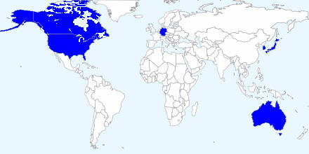

This website exists to help you decide whether your child would benefit from a Varicella (Chicken Pox) vaccine in the United Kingdom. A course of two injections is priced at around £200. Varicella vaccinations are not usually offered to children by NHS GP practices; this website lists the private clinics that make the vaccine available to children. They're typically the same clinics that offer private travel vaccinations.
Most children experience a couple of days of high temperature and about a week of discomfort with Chicken Pox, with no lasting effects. There are many reasons to choose to give your child the Varicella vaccine, but here are two main ones:
In summary, vaccinating is safer than getting "real" Chicken Pox, more convenient and probably economically cheaper. It's also not difficult to arrange a vaccination.
The varicella vaccine has been routinely given to children in the United States since 2005, as part of their MMRV programme. This is similar to the UK's MMR (Measles, Mumps, Rubella) vaccination; the additional V is for Varicella. In Europe, most countries do not vaccinate against Varicella, the main exception being Germany (where Chicken Pox is called "Windpocken") which has immunised children routinely since July 2004. Canada, Australia, Japan and South Korea routinely vaccinate children against Varicella.
If you feel that there's valuable information missing from this curated page then please email info@varicella.uk with links and a summary in your own words. If you feel that there are any inaccuracies or bias we'd be happy to hear from you and, after consideration, we'll put it right if required.
Argues that there are two significant reasons for the United Kingdom not considering a routine Varicella vaccination programme:
Lists the factors of cost, shingles worries and poor MMR uptake due to the debunked autism scare.
Contains detailed information about available Varicella vaccines and how they should be administered. The information is centred around at-risk individuals and doesn't mention or consider UK-wide vaccination of children.
Describes how the vaccine works and is administered; provides a list of potential side effects .
A handful of posts from a UK-based blogger.
A summary of the experiences and conclusions of a non-medical-expert with a scientific background.
This site is enthusiastically pro-vaccination, especially concerning the standard MMR jab. Ideally, we'd like to see Varicella vaccinations offered by the NHS as part of an MMRV programme; which would render this site useless!
article on vaccinations: provides a clear summary of the widely-accepted scientific view.